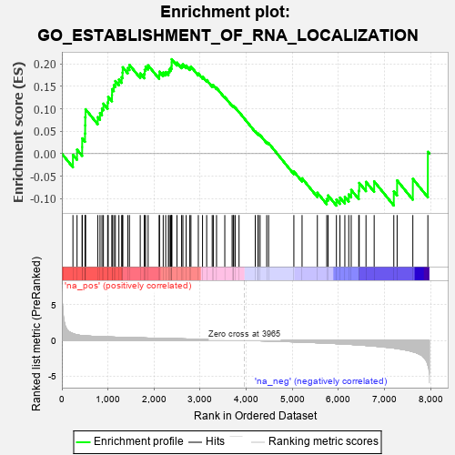
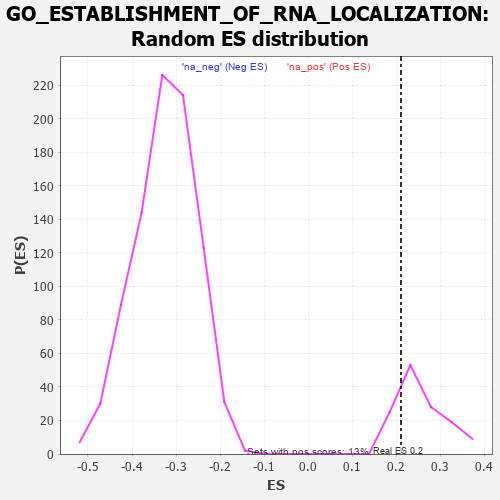

| | | Dataset | 7d |
| Phenotype | NoPhenotypeAvailable |
| Upregulated in class | na_pos |
| GeneSet | GO_ESTABLISHMENT_OF_RNA_LOCALIZATION |
| Enrichment Score (ES) | 0.2108039 |
| Normalized Enrichment Score (NES) | 0.81724197 |
| Nominal p-value | 0.80597013 |
| FDR q-value | 0.90118104 |
| FWER p-Value | 1.0 |
Table: GSEA Results Summary

Fig 1: Enrichment plot: GO_ESTABLISHMENT_OF_RNA_LOCALIZATION
Profile of the Running ES Score & Positions of GeneSet Members on the Rank Ordered List
| PROBE | GENE SYMBOL | GENE_TITLE | RANK IN GENE LIST | RANK METRIC SCORE | RUNNING ES | CORE ENRICHMENT | | 1 | SRSF9 | | | 240 | 0.950 | -0.0025 | Yes |
| 2 | NUP85 | | | 329 | 0.772 | 0.0090 | Yes |
| 3 | CPSF2 | | | 440 | 0.666 | 0.0146 | Yes |
| 4 | XPOT | | | 441 | 0.665 | 0.0341 | Yes |
| 5 | NXT2 | | | 502 | 0.628 | 0.0450 | Yes |
| 6 | NUP54 | | | 505 | 0.627 | 0.0632 | Yes |
| 7 | THOC1 | | | 507 | 0.627 | 0.0814 | Yes |
| 8 | NMD3 | | | 513 | 0.625 | 0.0992 | Yes |
| 9 | CPSF6 | | | 778 | 0.538 | 0.0815 | Yes |
| 10 | RAE1 | | | 827 | 0.524 | 0.0908 | Yes |
| 11 | NOL6 | | | 870 | 0.514 | 0.1006 | Yes |
| 12 | NSUN2 | | | 901 | 0.506 | 0.1116 | Yes |
| 13 | NOP9 | | | 993 | 0.485 | 0.1143 | Yes |
| 14 | CPSF1 | | | 1005 | 0.482 | 0.1271 | Yes |
| 15 | NCBP3 | | | 1087 | 0.466 | 0.1305 | Yes |
| 16 | PHAX | | | 1089 | 0.466 | 0.1441 | Yes |
| 17 | NUP93 | | | 1127 | 0.459 | 0.1529 | Yes |
| 18 | NUP43 | | | 1160 | 0.453 | 0.1621 | Yes |
| 19 | CPSF3 | | | 1237 | 0.440 | 0.1654 | Yes |
| 20 | THOC3 | | | 1297 | 0.430 | 0.1706 | Yes |
| 21 | THOC6 | | | 1316 | 0.426 | 0.1808 | Yes |
| 22 | NRDE2 | | | 1320 | 0.425 | 0.1929 | Yes |
| 23 | NUP88 | | | 1429 | 0.404 | 0.1911 | Yes |
| 24 | U2AF2 | | | 1466 | 0.396 | 0.1981 | Yes |
| 25 | XPO5 | | | 1700 | 0.357 | 0.1791 | Yes |
| 26 | NUP58 | | | 1787 | 0.340 | 0.1782 | Yes |
| 27 | THOC2 | | | 1796 | 0.338 | 0.1871 | Yes |
| 28 | FMR1 | | | 1816 | 0.334 | 0.1945 | Yes |
| 29 | NUP62 | | | 1871 | 0.324 | 0.1971 | Yes |
| 30 | RBM27 | | | 2111 | 0.289 | 0.1753 | Yes |
| 31 | CPSF4 | | | 2118 | 0.288 | 0.1831 | Yes |
| 32 | THOC7 | | | 2198 | 0.277 | 0.1812 | Yes |
| 33 | SRSF1 | | | 2252 | 0.267 | 0.1823 | Yes |
| 34 | SRSF4 | | | 2311 | 0.258 | 0.1825 | Yes |
| 35 | SEC13 | | | 2330 | 0.256 | 0.1878 | Yes |
| 36 | U2AF1 | | | 2359 | 0.252 | 0.1916 | Yes |
| 37 | SYMPK | | | 2381 | 0.248 | 0.1962 | Yes |
| 38 | SLU7 | | | 2382 | 0.248 | 0.2035 | Yes |
| 39 | NCBP2 | | | 2383 | 0.248 | 0.2108 | Yes |
| 40 | SARNP | | | 2496 | 0.227 | 0.2033 | No |
| 41 | NXF1 | | | 2597 | 0.214 | 0.1969 | No |
| 42 | NUP50 | | | 2625 | 0.209 | 0.1996 | No |
| 43 | SRSF3 | | | 2696 | 0.199 | 0.1966 | No |
| 44 | RIOK2 | | | 2775 | 0.187 | 0.1922 | No |
| 45 | ATR | | | 2800 | 0.183 | 0.1945 | No |
| 46 | XPO1 | | | 2960 | 0.156 | 0.1789 | No |
| 47 | ABCE1 | | | 3051 | 0.143 | 0.1717 | No |
| 48 | SMG7 | | | 3141 | 0.131 | 0.1643 | No |
| 49 | NUP98 | | | 3261 | 0.112 | 0.1525 | No |
| 50 | SMG5 | | | 3285 | 0.108 | 0.1527 | No |
| 51 | RBM8A | | | 3355 | 0.096 | 0.1468 | No |
| 52 | LSG1 | | | 3534 | 0.070 | 0.1263 | No |
| 53 | DHX9 | | | 3693 | 0.044 | 0.1076 | No |
| 54 | HSF1 | | | 3718 | 0.039 | 0.1057 | No |
| 55 | CASC3 | | | 3727 | 0.037 | 0.1058 | No |
| 56 | SRSF2 | | | 3759 | 0.033 | 0.1028 | No |
| 57 | SMG1 | | | 3843 | 0.021 | 0.0929 | No |
| 58 | ENY2 | | | 4195 | -0.041 | 0.0496 | No |
| 59 | RRS1 | | | 4256 | -0.051 | 0.0435 | No |
| 60 | PCID2 | | | 4258 | -0.051 | 0.0449 | No |
| 61 | RAN | | | 4299 | -0.059 | 0.0416 | No |
| 62 | SETD2 | | | 4443 | -0.084 | 0.0259 | No |
| 63 | NXF2 | | | 4484 | -0.092 | 0.0235 | No |
| 64 | PURA | | | 5032 | -0.205 | -0.0398 | No |
| 65 | ATM | | | 5210 | -0.249 | -0.0549 | No |
| 66 | SIDT2 | | | 5542 | -0.331 | -0.0871 | No |
| 67 | MX2 | | | 5745 | -0.390 | -0.1013 | No |
| 68 | SRRM1 | | | 5775 | -0.398 | -0.0932 | No |
| 69 | AGFG1 | | | 5955 | -0.457 | -0.1025 | No |
| 70 | CKAP5 | | | 6032 | -0.482 | -0.0980 | No |
| 71 | TNKS | | | 6138 | -0.516 | -0.0962 | No |
| 72 | MVP | | | 6223 | -0.543 | -0.0908 | No |
| 73 | FLOT1 | | | 6276 | -0.564 | -0.0809 | No |
| 74 | CETN3 | | | 6440 | -0.636 | -0.0829 | No |
| 75 | SIDT1 | | | 6450 | -0.640 | -0.0652 | No |
| 76 | TPR | | | 6597 | -0.709 | -0.0629 | No |
| 77 | NXT1 | | | 6774 | -0.797 | -0.0618 | No |
| 78 | CETN2 | | | 7200 | -1.070 | -0.0843 | No |
| 79 | QKI | | | 7272 | -1.145 | -0.0596 | No |
| 80 | IWS1 | | | 7613 | -1.587 | -0.0561 | No |
| 81 | WDR33 | | | 7939 | -3.452 | 0.0041 | No |
Table: GSEA details [plain text format]

Fig 2: GO_ESTABLISHMENT_OF_RNA_LOCALIZATION: Random ES distribution
Gene set null distribution of ES for GO_ESTABLISHMENT_OF_RNA_LOCALIZATION